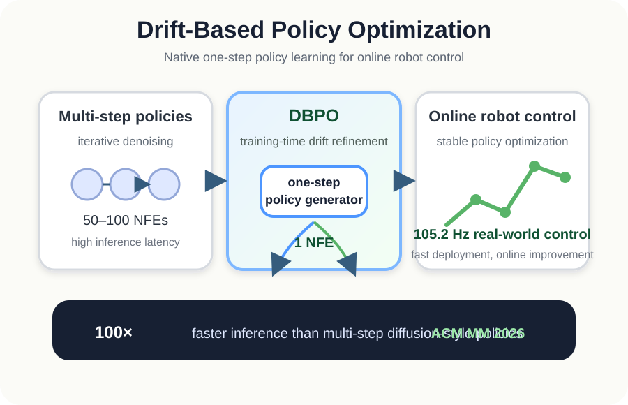
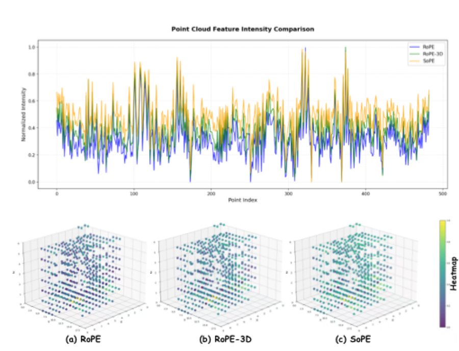
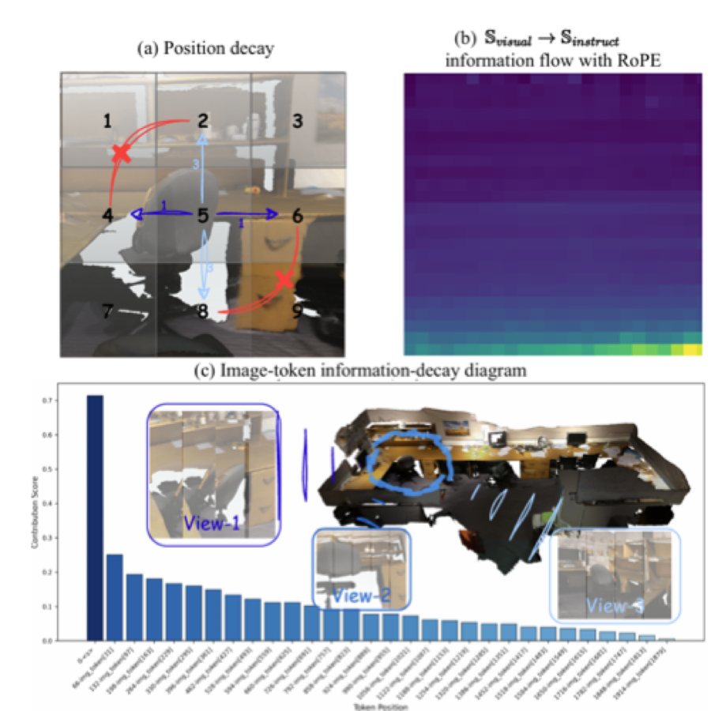
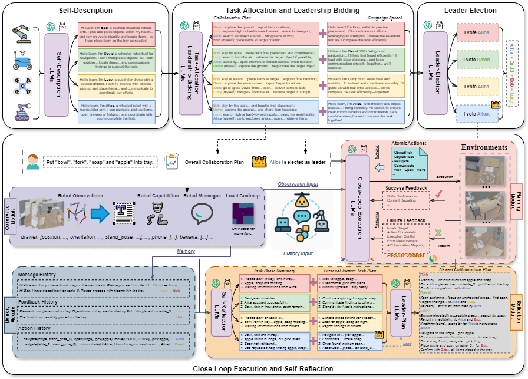
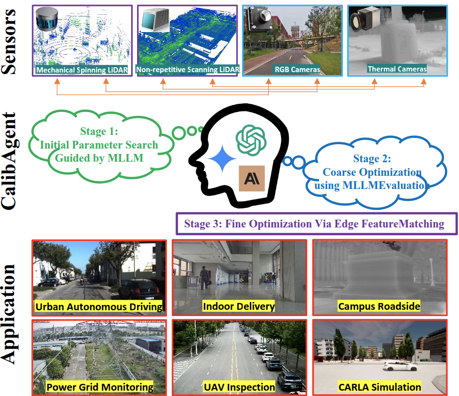

DBPO is accepted to ACM Multimedia 2026.
PhD Candidate · University of Science and Technology of China
Wenhao Yu
I build learning-based systems that help robots perceive, reason, plan, and act in complex environments.
I am pursuing a PhD at USTC, advised by Prof. Yanyong Zhang. I also received my M.S. from USTC, advised by Prof. Jianmin Ji, and my B.S. in Computer Science from Qingdao University in 2021.
- Robot Learning
- Decision & Planning
- Embodied AI
- Autonomous Driving
Updates
News
Our work on spherical positional embedding for 3D LVLMs is accepted to CVPR 2026.
Our work on causal continuous rotary positional encoding is accepted to ICRA 2026.
I am looking for research interns interested in embodied AI and machine learning. Please get in touch.
CalibWorkflow is accepted to ACM Multimedia 2025.
STDArm is accepted to RSS 2025.
LDP is accepted to IROS 2024.
PathRL is accepted to ICRA 2024.
Research
Selected Publications
* Corresponding author

Drift-Based Policy Optimization: Native One-Step Policy Learning for Online Robot Control
DBPO shifts iterative refinement from inference to training for native one-step generative robot policies, enabling up to 100× faster inference and stable online policy optimization for high-frequency control.

SoPE: Spherical Coordinate-Based Positional Embedding for Enhancing Spatial Perception of 3D LVLMs
SoPE maps 3D tokens into spherical coordinates and mixes multi-scale frequencies to preserve geometry and direction, improving spatial perception in 3D large vision-language models.

C2RoPE: Causal Continuous Rotary Positional Encoding for 3D Large Multimodal-Models Reasoning
C2RoPE preserves spatio-temporal continuity in visual tokens and models spatial causal relations with Chebyshev causal masking to improve 3D multimodal reasoning.

DynaHMRC: Decentralized Heterogeneous Multi-Robot Collaboration for Dynamic Tasks with Large Language Models
DynaHMRC coordinates heterogeneous robot teams through leadership bidding, leader election, and reflective execution, adapting efficiently to dynamic tasks with fewer action and communication steps.

CalibWorkflow: A General MLLM-Guided Workflow for Centimeter-Level Cross-Sensor Calibration
CalibWorkflow uses multimodal large language models as visual guides to search, optimize, and refine parameters for robust, hardware-agnostic calibration across diverse sensors and environments.

STDArm: Transfer Visuomotor Policy From Static Data Training to Dynamic Robot Manipulation
STDArm transfers static-trained visuomotor policies to dynamic robots, achieving precise and stable manipulation through real-time action correction without retraining.

MHRC: Closed-loop Decentralized Multi-Heterogeneous Robot Collaboration with Large Language Models
MHRC uses large language models to coordinate heterogeneous mobile, manipulation, and mobile-manipulation robots across collaborative real-world tasks.

LDP: A Local Diffusion Planner for Efficient Robot Navigation and Collision Avoidance
LDP models multimodal expert policies with a diffusion model to produce efficient, preference-aware navigation paths across complex scenarios.

PathRL: An End-to-End Path Generation Method for Collision Avoidance via Deep Reinforcement Learning
PathRL directly generates collision-free navigation paths with deep reinforcement learning, avoiding supervised imitation while generalizing to varied complex scenarios.
Engineering
Projects

Building Real-World Robotic Systems
I build and deploy robot decision-making and planning systems on differential-drive, Ackermann-steering, logistics, and passenger vehicle platforms.